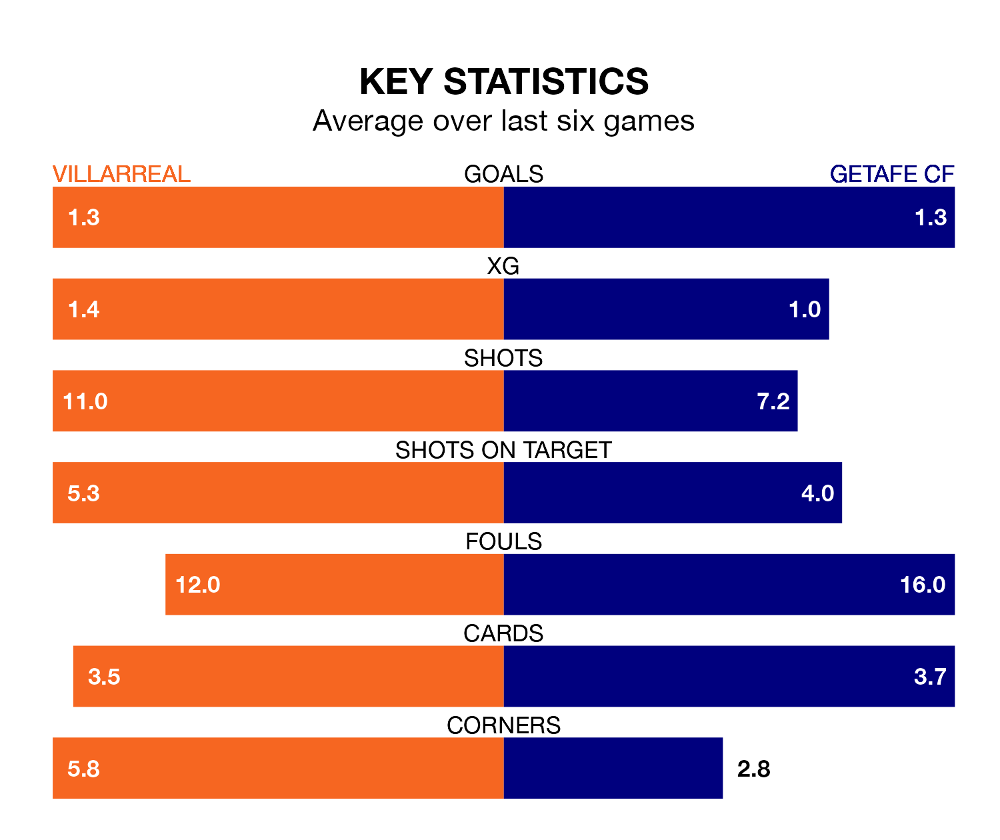

Getafe CF travel to Villarreal on late Friday in La Liga.
The visitors come into the game on the back of a win in their last match, having beaten Celta de Vigo 3-2 at home, with two goals from Jaime Mata and one from Borja Mayoral.
Villarreal, meanwhile, drew their last match, 1-1 against Deportivo Alavés, with their goal scored by Jorge Cuenca.
In Mayoral Moya, Getafe have one of the league's most on-form strikers so far this season. He has notched 15 goals in 24 appearances, to sit second in the scoring charts.
His goal rate of one every 127 minutes is quicker than that of Gerard Moreno, Villarreal's top scorer with a goal every 164 minutes, and a total of 10 goals in 21 games.
With 34 goals in 24 games so far this season, the hosts are scoring more than average in the league with 1.4 goals per game. But they are conceding more than average too, letting in 46 goals at a rate of 1.9 per game.
The away team, meanwhile, are average scorers, with 1.3 goals per game. They have conceded 1.4 goals per game.
In the last 10 years, Villarreal and Getafe have played each other on 20 occasions. Villarreal won 13 of them, Getafe three, and they drew four times.
On average, Villarreal scored 1.2 goals and Getafe 0.8 in those matches.
Their last meeting was on September 30, when they played out a 0-0 draw.
Villarreal are in disappointing form in La Liga, with one win and three draws from their last six games.
With two wins and a draw over that period, Getafe's form is slightly better – they have taken seven points from 18, compared to Villarreal's six.
The home side are 13th in the table after 24 games, of which they have won six and drawn seven, earning 25 points.
Getafe are three places ahead of Villarreal in 10th, with eight wins and nine draws putting them on 33 points.
Updated: 12:06 (UTC), 15/02/24